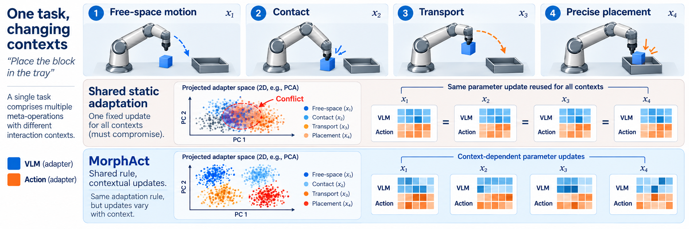
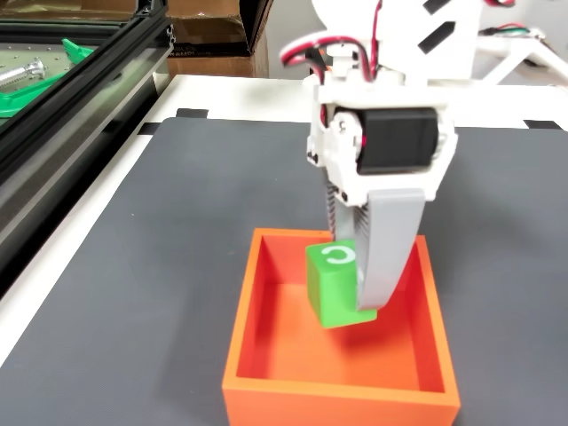
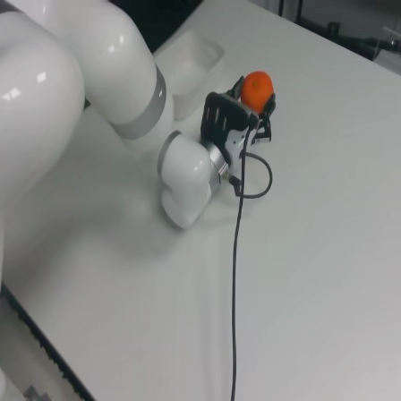
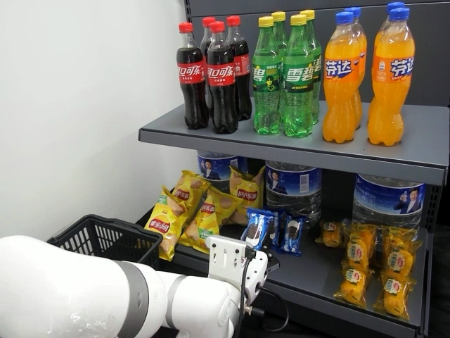
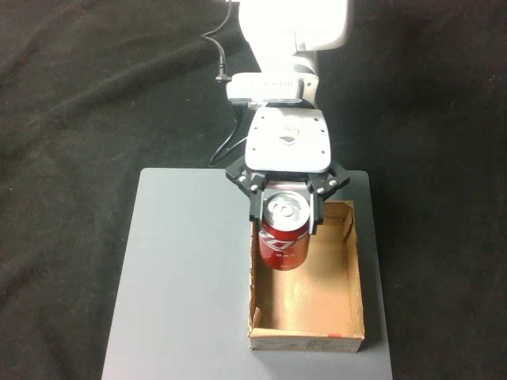

Read the context
Image and language embeddings condition low-rank updates for the vision–language module.
Vision · Language · Action
 MorphActContextual Parameterization
MorphActContextual ParameterizationOne shared adaptation rule.
Parameter updates that change with context.

X-VLA, π0, and π0.5
Meta-World average · π0.5
Real-world Oreo retrieval · π0
01 / The idea
A robot’s perceptual and control demands change even within a single task. A fixed parameter update has to accommodate them all.
MorphAct is a contextual parameterization framework for vision–language–action models. Instead of learning one static update, it learns a shared rule that generates low-rank parameter updates from the current context.
Two coupled generators adapt the vision–language and action modules. The adapted visual-language representation then guides action-side parameter generation. Both generators learn jointly through the policy’s native action objective, without operation labels or expert-adapter targets.
02 / How it works
Adapt what the policy sees, then use that representation to adapt how it acts.

Image and language embeddings condition low-rank updates for the vision–language module.
Adapted representations and robot state condition the action-side generator.
Train with the native action objective and reuse generated updates within each action chunk.
03 / In simulation
Higher average closed-loop success on LIBERO and Meta-World for all three backbones.
40 tasks · 4 suites · 50 rollouts per task
BaselineMorphAct
+3.55 percentage points
+2.50 percentage points
+0.50 percentage points
Metric: mean success rate across Spatial, Object, Goal, and Long (LIBERO-10). Bars use a 0–100% scale. Long has the largest gain for each backbone; individual suite scores vary.
50 tasks · 4 difficulty groups · 20 rollouts per task
BaselineMorphAct
+7.27 percentage points
+13.73 percentage points
+15.13 percentage points
Metric: unweighted average of Easy (28 tasks), Medium (11), Hard (6), and Very Hard (5) group success rates. Bars use a 0–100% scale. This is a group average, not a task-weighted MT50 average.
Results and evaluation settings are reported in the manuscript. Gains denote absolute percentage-point differences.
04 / On real robots
Four manipulation tasks. Two robot platforms.
Compare π0 with and without MorphAct.

SO-101
80%→93%+13 pp

xArm6
65%→80%+15 pp

xArm6
60%→77%+17 pp

xArm6
75%→88%+13 pp
Representative rollout frames. Scores show π0 baseline → π0 + MorphAct. Each method uses 100 demonstration episodes and 100 physical evaluation rollouts per task.